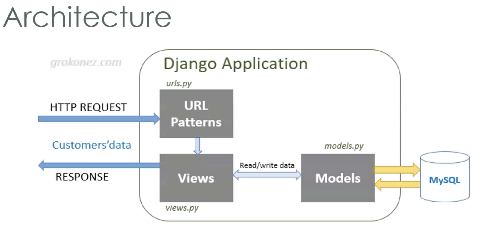
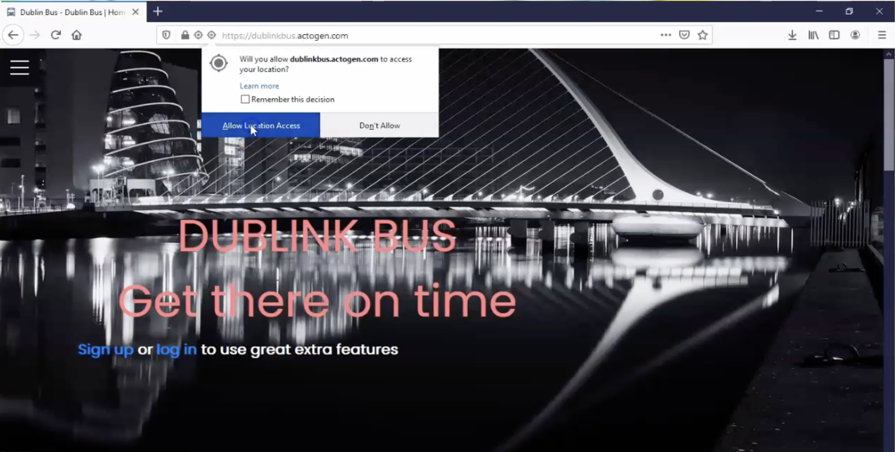

Project Prototype
1. Provide users with an accurate ML prediction as to how long a journey will take when using the Dublin Bus Network.
2. Responsive design.
3. Interactive map.
4. Allow users to save favorite routes / stops.
5. Give Uers updated estimated arrival time.
1. Django - Backend framework that allows for the use of python
2. HTML / CSS / Javascript - Frontend basics
3. MySQL - Database(contain information such as login credentials, user details, favorite stops)
4. Nginx - Webserver
The features of the basic homepage can be split into two components, roughly speaking. The first of these is the map: when the map loads the user’s location is determined using the Google Geolocation API which is made available to web applications, provided that they are served using HTTPS. The map is then centered on the user’s location and a current location icon is displayed. If the user’s current location is unavailable, then the map is automatically centered on Dublin city center. By default, the map is set to a zoom level where stop icons are visible, and if the user zooms out these icons are gathered together into clusters with the aid of an open source library that was utilised in order to prevent visual cluttering.

Whenever a user clicks on a map icon a content window is displayed where real-time information about that stop is promptly presented. In order to obtain the said real-time information, a request is made server-side and the retrieved information is passed to the client (in order to prevent issues with CORS restrictions). A button to save a given stop as a ‘favourite stop’ is available to logged-in users; and favourite stops are displayed with a heart-shaped icon (as opposed to the default generic bus icon), and separated out visually from marker-clusters on the map in order to make it easier and quicker for the user to locate them.

The search bar which we have implemented enables stops to be searched for either by name or by stop ID (the display of this latter kind of detailed information, although seemingly overkill, is in actual fact commonly found on bus-stops). We use a combination of both name and stopID to ensure that the correct bus stop is selected, since many stops have identical names. When a user searches for a particular stop, the map will center on the stop, and the stop’s corresponding content-window will be displayed. Users can also press the ‘Nearest Stop To Me’ button to open the content-window for the stop closest to their current geographical location. If this lattermost data-point is unavailable, then a suitable information message is displayed.
This integral component of the application takes a number of data-inputs from the user, the first two of these being a start and end address respectively. The input boxes for the addresses make use of Google maps ‘Places’ API to autocomplete to specific locations. The user can choose from any of the days available to get a prediction specific to that date. They can moreover select any time they like, although if the combination of the current chosen day and time represents a period in the past, then the time will be automatically changed to the current time (which is the default) and an appropriate error message will be displayed for 10 seconds. Users also have the option to modify the mode of the prediction, which is to say that if they would like to leave the start location at the selected time and date, then they can choose the ‘depart at’ option, otherwise they can choose the ‘arrive by’ option, which allows them to specify the time and date by which they would like to arrive at a given location.

The Google ‘Directions’ API is consulted to find the most suitable route (or routes) for a user; once a valid route is returned, a route object is created which contains such information as, for example, the start stop, end stop and lineID. Weather data for the desired date and time is retrieved via a relatively simple database query (a database is used to store this information to prevent issues of too many concurrent users making API requests to a third party distributor), and the relevant route object and weather information are then promptly forwarded as inputs to our predictive model. The results of backend data processing are displayed in a collapsible section underneath the route planner form. This collapsible section contains all pertinent route information, a predicted journey duration, the option to display the route on the map, as well as a button to save the trip for future reference.

Users also avail of the further possibility to save favourite locations in order to access them more quickly at a later stage. Both a short name and a full address must be provided for the use of this particular feature, and the relevant information is subsequently stored in our database. When a user clicks on any one of their saved locations, the corresponding address will automatically be filled in the first empty address input box, so that the user does not have to manually search for an address.

whenever (logged-in) users make use of the route planning tool, they have the further option to save a trip. This allows us to store the route object containing all the stops associated with that trip in our database so that the user can access it at a later stage. But this is not all: when the user comes close to the start stop of their planned journey, they have the ability to click a button which 'starts the trip' as it were. All the stops associated with that trip are then displayed for the user's convenience. Moreover, we also display the number of stops and the distance until the user's final destination, and these data-points are continuously updated as the user progresses along his/her route. The coordinate shape of the route is plotted on the map and the user's position on the route is marked and updated as he/she moves. When the user starts his/her trip we begin location-tracking, a technique which allows us to calculate the distance the user is from each given stop in real time, while updating all the relevant information that is displayed as the user approaches each subsequent stop. The stops on display only ever include remaining stops on the route and both distance and the number of stops until the destination are dynamically updated at each step of the journey. Most importantly, however, predictive times are repeatedly computed at regular intervals during the course of the journey so as to give the user an accurate estimate of remaining travel time. This final feature of the application allowed us to provide users with the most complete information possible whilst also making the application a little bit more interactive.
In order to improve the efficiency of this process, we used DBSCAN clustering, an algorithmic method that “groups together points based on distance”[1]. In essence, the stops were first grouped into 38 clusters based on their distance from one another (less than 0.8 km). This meant that we could then compute the cluster whose centermost stop was the least distance from any given user’s current location, and then use the coordinates of this centermost stop as a key into the specific cluster which contained the nearest stop to the user. This technique reduced overall search time significantly.